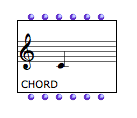
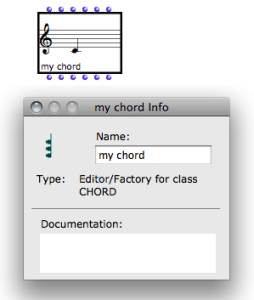

OpenMusic DocumentationHiérarchie de section : OM 6.6 User Manual > Visual Programming I > Boxes > Objects – Factory Boxes > Visualization
OpenMusic DocumentationHiérarchie de section : OM 6.6 User Manual > Visual Programming I > Boxes > Objects – Factory Boxes > Visualization
Navigation : page précédente | page suivante
Attention, votre navigateur ne supporte pas le javascript ou celui-ci à été désactivé. Certaines fonctionnalités de ce guide sont restreintes.
Visualization
Visualizing Objects : the Miniview
The current value of a factory box – its last computed value, or its default value if the box has just been added – is displayed instead of the initial icon. To show or hide a miniview, press |

A "chord" box in normal and "miniview" modes.
|
Adjustments
To move the content of a miniview up or down : press Alt+ ↑ or ↓ .
Default Miniview

The object refers to a simple class with three slots : slot1, slot2 and slot3.
|
Some classes don't have a specific miniview. A default miniview then shows the different slot – input – names and current values. |
About Slots
Displaying and Editing the Name of a Factory Box

|
In theory, the name of a factory box isn't displayed with its icon. To displayed or hide the name of a box, press A default name appears in the lower left corner of the box icon. This name is that of the corresponding class of the box. |
To edit this name :
|

|
Références :
Plan :
- OpenMusic Documentation
- OM 6.6 User Manual
- Introduction
- System Configuration and Installation
- Going Through an OM Session
- The OM Environment
- Visual Programming I
- Visual Programming II
- Basic Tools
- Score Objects
- Maquettes
- Sheet
- MIDI
- Audio
- SDIF
- Lisp Programming
- Errors and Problems
- OpenMusic QuickStart
Navigation : page précédente | page suivante
A propos...(c) Ircam - Centre Pompidou